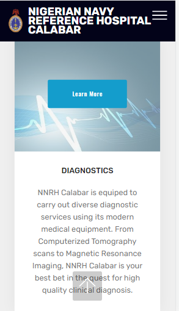

Proximity
Nigerian Navy Reference Hospital
Visit Nigerian Navy Reference Hospital 
proximity is the arrangement of related elements or items. Here on the page,
the principle of proximity is respected by grouping elements of the same group or grouping related items.
Hike's law
The Nigerian airforce
Visit The Nigerian airforcedescribes the time it takes for a person to make a decision as a result of the possible choices: increasing the number of choices will increase the decision time. On the website, there is less but relevant options to choose from.
Contrast
Udacity
Visit Udacitynone yet
contrast on this website is implemented by using two different typefaces which are serif and san serif. The serif typeface is used on the title while
san serif is used on the rest of the text on the webpage.